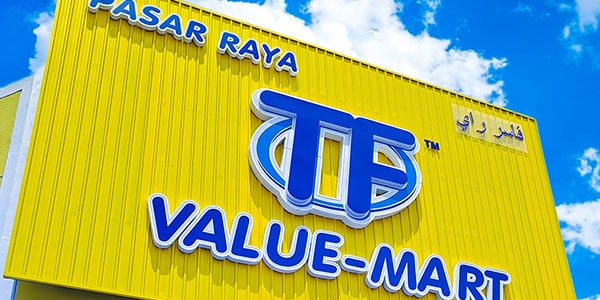
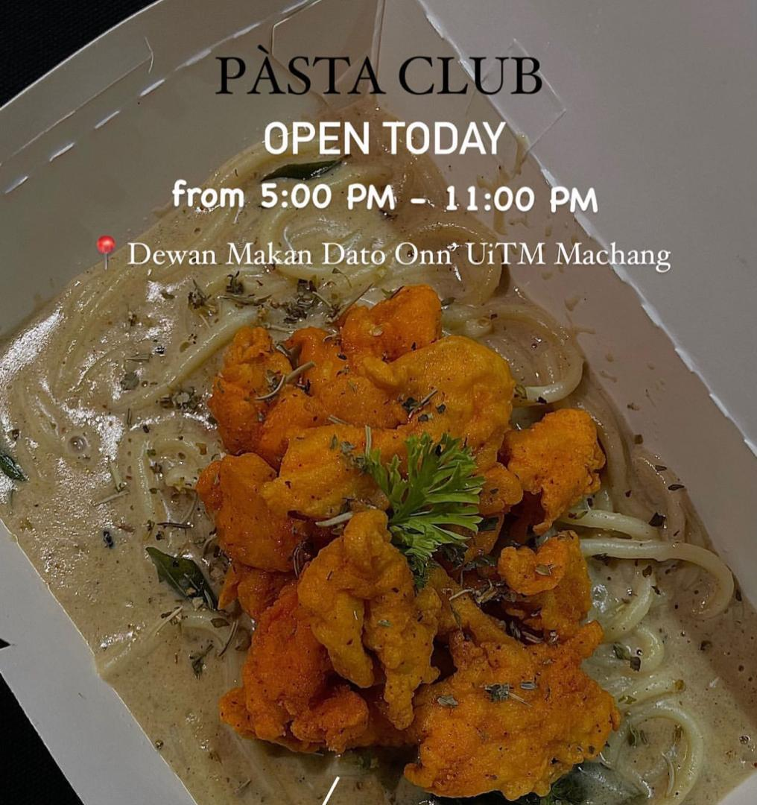
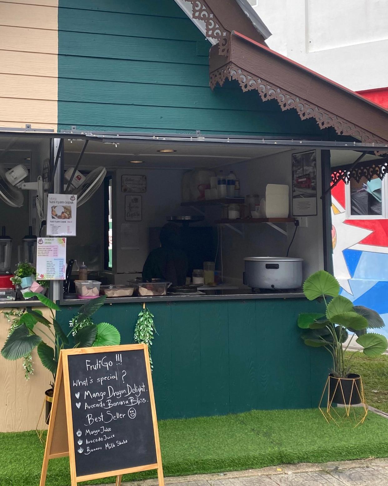
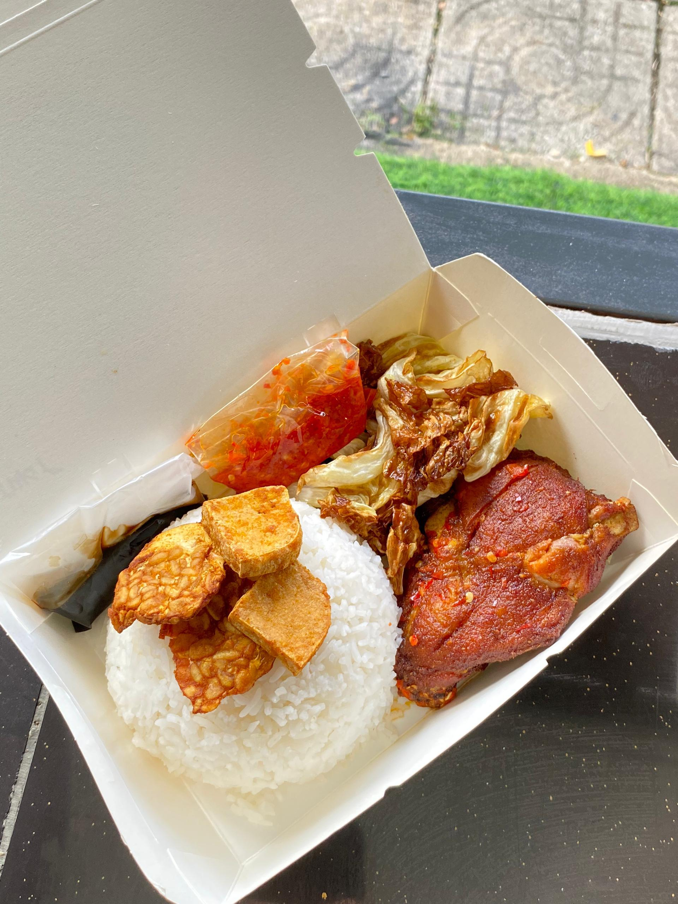
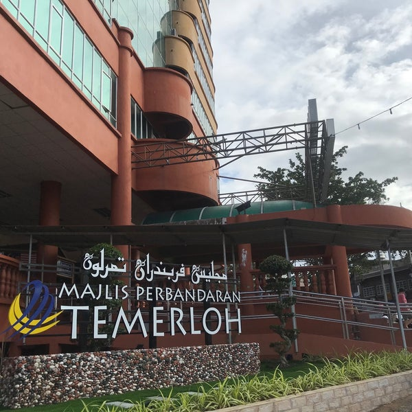

TF Value Mart
Duration: 2022
Role: Cashier
- Operated cash register and ensured accurate money handling.
- Followed store procedures regarding coupons and gift cards.
| Image | Description |
|---|---|
|  | The workplace as a cashier. |
Pasta Club
Duration: 2023 - 2024
Role: Kitchen Staff
- Collaborated with team members to ensure efficient kitchen operations.
- Maintained strict food safety and sanitation standards.
| Image | Description |
|---|---|
|  | A glimpse of the kitchen workspace and teamwork. |
Ayam Gepuk FrutiGO
Duration: 2024 - 2025
Role: Kitchen Staff
- Managed ingredient preparation, including cleaning and chopping vegetables, and preparing sambal using traditional techniques.
- Maintained a clean and organized kitchen environment by sanitizing workstations, cleaning utensils, and adhering to food safety standards.
- Collaborated with team members to ensure timely order preparation during peak hours.
| Image | Description |
|---|---|
|  | A visual of the kiosk setup and ambiance. |
|  | The signature dish served with sambal. |
Internship at Majlis Perbandaran TemerlohMPT
Duration: 2024
Department: Jabatan Pengurusan dan Penilaian Harta
- Conducted house inspections and managed data entry tasks.
- Distributed notices for fire extinguisher installation, rental agreements, and rent claims.
- Assisted in managing tax systems for municipal services.
| Image | Description |
|---|---|
|  | MPT building where the internship was conducted. |